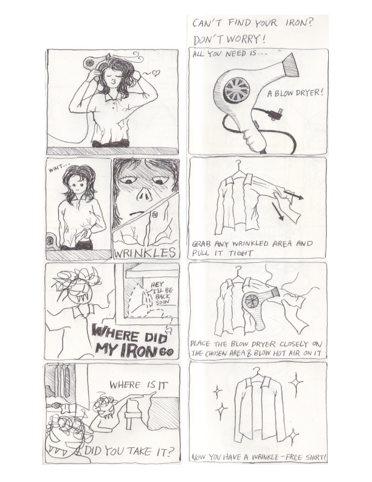
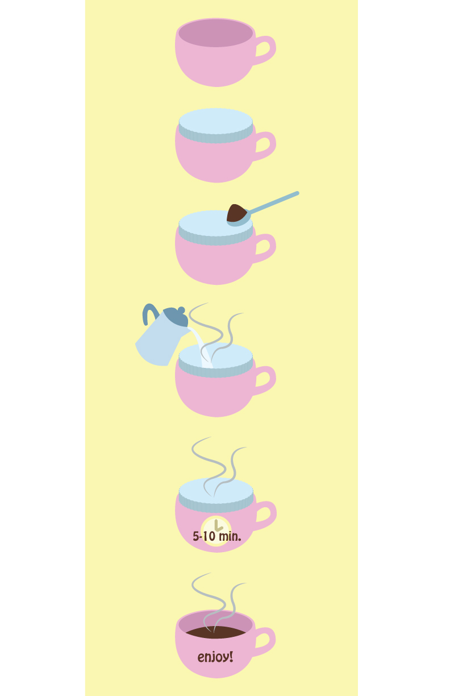

This is a comic strip on how to iron a shirt with a hairdryer.

This diagram demonstrates how to make a cup of coffee without using a coffee maker.

This diagram demonstrates how to organize a set of earphones without getting them tangled.
I could not decide which idea I should choose to work on. The class suggested either the hair dryer idea or the earphones idea would work well, and I eventually chose to demonstrate how to organize earphones.
For the user testing, I made a video demonstrating step-by-step process of my way of organizing earphones, and I also provided a supplementary booklet. During the user testing, I noticed that the users were struggling with flipping the pages of the booklet while they had earphones on their hands.
After the user testing in class, I also tested my roommates and my friends outside of the class. They commented that the instructions in the booklet were more easily accessible than the video. I changed the format of the booklet to an instruction poster, so the users would not waste their time flipping through pages while they are learning.